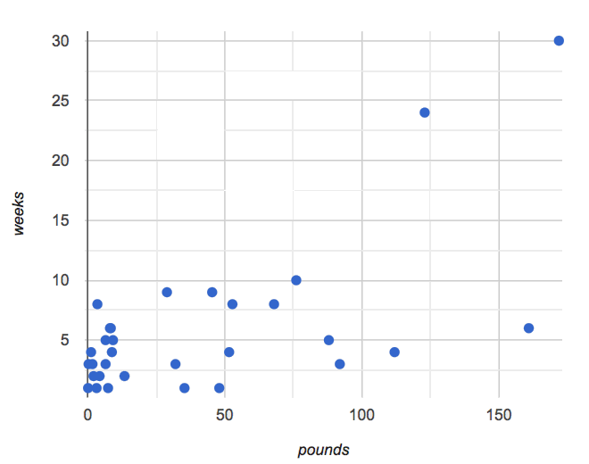
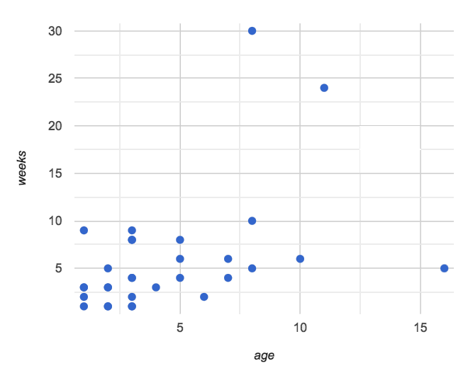
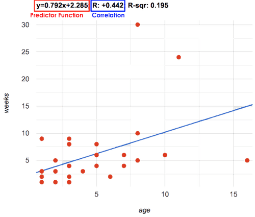
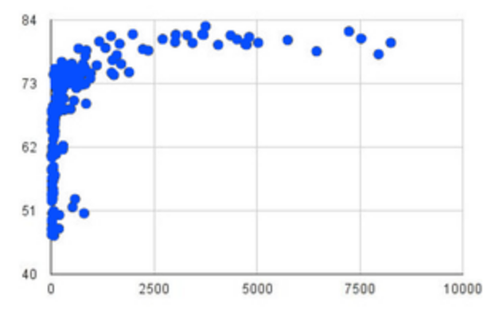

Linear Regression
Students compute the “line of best fit” using the function for linear regression, and summarize linear relationships in a dataset.
|
Lesson Goals |
Students will be able to…
|
|
Student-facing Lesson Goals |
|
|
Materials |
|
|
Preparation |
|
explanatory variable-
any variable that could impact the "response variable", generally plotted on the x-axis of a scatter plot
line of best fit-
summarizes the relationship (if linear) between two quantitative variables
linear regression-
a type of analysis that models the relationship between two quantitative variables. The result is known as a regression line, or line of best fit.
predictor function-
a function which, given a value from one dataset, makes an educated guess at a related value in a different dataset
response variable-
the variable in a relationship that is presumed to be affected by the explanatory variable, generally plotted on the y-axis of a scatter plot
slope-
the steepness of a straight line on a graph
y-intercept-
the point where a line or curve crosses the y-axis of a graph
| Intro to Linear Regression | 10 minutes |
Overview
Students are introduced to the concept of linear regression, and learn how to interpret the slope and y-intercept. For teachers who have the need and the bandwidth to go deeper, this is a good opportunity to teach the algorithm behind linear regression.
Launch
-
Make two scatterplots from the
animals-table:-
Use
ageas the explanatory variable in one plot -
Use
poundsas the explanatory variable in the other plot. -
In both plots, use
weeksas your response variable andnamefor thelabels.
-
-
We will refer to the explanatory column as “xs” and the response column as “ys.”
-
Reflect on the scatterplots you have created. Can we predict an animal’s adoption time based on its size? Its age?
Have students write down what they think, then quickly survey the class.

{kind=link}
Can we be more precise about this, and actually predict how long it will take an animal to be adopted, based on these factors? And which one would give us a better prediction?
The mean, median, and mode are three different ways to measure the “center” of a dataset in one dimension. Each represents a different way to collapse a bunch of points on a number line into a single, summary value. If the “center” of points on a one dimensional number line is a single point, what is the “center” of points in a two-dimensional cloud?
What we need to do is find a line — called a line of best fit, or a regression line — that is at the center of this cloud. Each point in our scatter plot “pulls” on the line, with points above the line yanking it up and points below the line dragging it down. Points that are really far away — especially influential observations that are far out in the x direction —- pull on the line with more force. This line can be graphed on top of the scatter plot as a function, called the predictor function.
Given a value on the x-axis, this line allows us to predict what the corresponding value on the y-axis might be. This allows us to make predictions based on our data.
Data scientists use a statistical method called linear regression to pinpoint linear relationships in a dataset. When we draw our regression line on a scatter plot, we can imagine a rubber bands stretching vertically between the line itself and each point in the plot — every point pulls the line a little “up” or “down”. Linear regression is the math behind the line of best fit.
|
Vocabulary and Computation The straight line that best fits the points on a scatter plot has several names, depending on the context, subject, or grade level. All of the following terms refer to the same concept:
The line itself is computed through a process called linear regression, which also goes by the name least squares regression. If you want to teach students how to compute this line, now is the time! However, this algorithm is not a required portion of Bootstrap:Data Science. |
Investigate
Open this Interactive LR Plot.
-
Move the blue point “P”, and see what effect it has on the red line.
-
Find the number called r. What does this number tell us?
-
What’s the largest r-value you can get? What do you think that number means?
-
Move P so that it is as far from the other points as possible.
-
Move P so that it is most aligned with the other points.
-
Could the regression line ever be above or below all the points? Why or why not?
Let’s explore scatter plots for weeks-v-pounds and weeks-v-age.
🖼Show image

{kind=link}
After looking at the point clouds, we are left with a few questions:
-
Do the relationships appear to be linear for one? Both?
-
If a relationship is linear, what line in particular are the scatter plot points clustering around?
-
What is the r-value for each relationship?
-
Turn to Drawing Predictors.
-
In the first column, draw a line of best fit through each of the scatter plots.
-
In the second column, circle whether the slope of the line (which is the same as the direction of the correlation) is positive or negative.
Common Misconceptions
-
Don’t forget to look at sample size! A linear regression plot with an r-value of 0.999 is strong…but that’s useless if it’s a sample of just three datapoints!
Synthesize
Give students some time to experiment, then share back observations. Can they come up with rules or suggestions for how to minimize error?
-
Would it be possible to have a line that is below all the points?
-
No
-
-
Would it be possible to have a line that is above all the points?
-
No
-
-
Would it be possible to have a line with more points on one side than the other?
-
No
-
| Linear Regression in Pyret | 20 minutes |
Overview
Students are introduced to the lr-plot function in Pyret, which performs a linear regression and plots the result.
Launch
Pyret includes a powerful display, which (1) draws a scatter plot, (2) draws the line of best fit, and (3) even displays the equation for that line:
# lr-plot :: Table, String, String, String -> Image
# consumes a table, and 3 column names: labels, xs and ys
# produces a scatter plot, and draws the line of best fit
lr-plot(animals-table, "name", "age", "weeks")lr-plot is a function that takes a Table and the names of 3 columns:
{kind=link}
-
ls— the name of the column to use for labels (e.g. “names of pets”) -
xs— the name of the column to use for x-coordinates (e.g. “age of each pet”) -
ys— the name of the column to use for y-coordinates (e.g. “weeks for each pet to be adopted”)
Our goal is to use values of the variable on our x-axis to predict values of the variable on our y-axis.
Pedagogical Note We prefer the words “explanatory” and “response” in our curriculum, because in other contexts the words “dependent” and “independent” refer to whether or not the variables are related at all, as opposed to what role each plays in the relationship. |
-
Open your saved Animals Starter File, or make a new copy.
-
Create an
lr-plotfor theanimals-table.-
Use
"names"for the labels. -
Use
"age"for the x-axis. -
Use
"weeks"for the y-axis.
-
The resulting scatter plot looks like those we’ve seen before, but it has a few important additions. First, we can see the line of best fit drawn onto the plot. We can also see the equation for that line (in red). In this plot, we can see that the slope of the line is 0.792, which means that on average, each extra year of age results in an extra 0.792 weeks of waiting to be adopted (about 5 or 6 extra days). By plugging in an animal’s age for x, we can make a prediction about how many weeks it will take to be adopted. For example, we predict a 5-year-old animal to be adopted in 0.7925 + 2.285 = 6.245 weeks. That’s the y-value exactly on the line at x=5.
The intercept is 2.285. This is where the best-fitting line crosses the y-axis. We want to be careful not to interpret this too literally, and say that a newborn animal would be adopted in 2.285 weeks, because none of the animals in our dataset was that young. Still, the regression line (or line of best fit) suggests that a baby animal, whose age is close to 0, would take only about 3 weeks to be adopted.
We also see the r-value is +0.442. The sign is positive, consistent with the fact that the scatter plot point cloud and line of best fit, slope upward. The fact that the r-value is close to 0.5 tells us that the strength is moderate. This makes sense: the scatter plot points are somewhere between being really tightly clustered and really loosely scattered.
Going Deeper Students may notice another value in the lr-plot, called R^2. This value describes the percentage of the variation in the y-variable that is explained by least-squares regression on the x variable. In other words, an R^2 value of 0.20 could mean that “20% of the variation in adoption time is explained by regressing adoption time on the age of the animal”. Discussion of R^2 may be appropriate for older students, or in an AP Statistics class. |
Investigate
-
If an animal is 5 years old, how long would our line of best fit predict they would wait to be adopted? What if they were a newborn, or just 0 years old?
-
Our line of best fit predicts that a 5-year-old animal would weight about 6 weeks to be adopted, while a newborn would wait about 2 weeks.
-
-
Make another lr-plot, but this time use the animals' weight as our explanatory variable instead of their age.
-
If an animal weighs 21 pounds, how long would our line of best fit predict they would wait to be adopted? What if they weighed 0.1 pounds?
-
A 21-pound animal would weight about 4 weeks, while a 0.1-pound animal would wait about 2.5 weeks.
-
-
Make another lr-plot, comparing the
agev.weekscolumns for only the cats. -
Complete Which Questions Make Sense to Ask?
-
Optional: Open Age vs. Height Starter File to explore the same student dataset broken down by gender identity using Age vs. Height Explore.
|
Simpson’s Paradox A common misconception is that "more data is always better", and the age-v-height worksheet challenges that assumption. Two sub-groups (girls and boys) can each have a strong correlation between age and height, but when they are combined the correlation is weaker. This phenomenon is called Simpson’s Paradox. Statistics (especially AP!) teachers will want to dive deeper on this topic. |
Synthesize
A predictor only makes sense within the range of the data that was used to generate it.
Toddlers grow a lot faster than adults. A regression line predicting the height of toddlers based on age would predict that a 60-year-old is 10 feet tall!
Statistical models are just proxies for the real world, drawn from a limited sample of data: they might make a useful prediction in the range of that data, but once we try to extrapolate beyond that data we may quickly get into trouble!
| Interpreting LR Plots | 20 minutes |
Overview
Students learn how to write about the results of a linear regression, using proper statistical terminology and thinking through the many ways this language can be misused.
Launch
How well can you interpret the results of a linear regression analysis? How would you explain it to someone else?
-
What does it mean when a data point is above the line of best fit?
-
It means the y-value is _higher than the sample would have predicted for that x-value._
-
-
What does it mean when a data point is below the line of best fit?
-
It means the y-value is _lower than the sample would have predicted for that x-value._
-
-
Turn to Interpreting Regression Lines & r-Values, and match the write-up on the left with the line of best fit and r-value on the right.
Let’s take a look at how the Data Cycle can be used with Linear Regression, and how the result can be used to form our Data Story.
Have students explain the connection between the Ask Questions and Consider Data step. Do they match? Why or why not?
At the bottom of the page we have the Data Story for this question, which includes the results of the analysis and a responsible way to write about them. When looking at a regression for adoption time v. age for just the cats, we saw that the slope of the predictor function was +0.23, meaning that for every year older, we expect a cat to take +0.23-weeks longer to be adopted. The r-value was +0.566, confirming that the correlation is positive and indicating moderate strength.
Investigate
-
Turn to Describing Relationships.
-
Using the language you saw on Data Cycle: Regression Analysis (Example), how would you write up the findings on this page?
-
Optional: For more practice, you can complete Describing Relationships (2).
Common Misconceptions
-
Don’t call it "accuracy"! One of the most common misconceptions about Linear Regression is that the r or r-squared value is a measure of accuracy. For example, a student who sees a very high r-value when plotting age vs. weeks might say "this prediction is 95% accurate." But these values only speak to how much variation in the y-axis can be explained by variation in the x-axis, so the statement should be "95% of the variation in weeks can be explained by variation in the age."
-
X and Y matter! The correlation coefficient will be the same, even if you swap the x- and y-axes. However, the interpretation of the display is different! The column used for the x-axis will always be interpreted as "the explanation" for the "result" seen in the y-axis. It’s fine to say that being older tends to make an animal take longer to be adopted, but it is not true that taking longer to be adopted makes an animal older!
Synthesize
Have students read their data stories aloud, to get comfortable with the phrasing.
| Your Analysis | flexible |
Overview
Students repeat the previous activity, this time applying it to their own dataset and interpreting their own results. Note: this activity can be done briefly as a homework assignment, but we recommend giving students an additional class period to work on this.
Launch
Now that you’ve gotten some practice performing linear regression on the Animals Dataset, it’s time to apply that knowledge to your own data!
Investigate
-
Ask your questions and tell your story on Data Cycle: Regression Analysis.
-
Fill in the Correlations portion of your Research Paper, using the scatter plots and linear regression plots they’ve constructed for their dataset and explaining what they show.
Synthesize
Have students share their findings with the class. Get excited about the connections they are making and the conclusions they are drawing! Encourage students to make suggestions to one another about further analysis.

{kind=link}
The word “linear” in “linear regression” is important here. In the image on the right, there’s clearly a pattern, but it doesn’t look like a straight line!
There are many other kinds of statistical models out there, but all of them work the same way: use a particular kind of mathematical function (linear or otherwise), to figure out how to get the “best fit” for a cloud of data.
Project Option: Olympic Records In this project, students analyze Olympic Records data in running, swimming, or speed skating. They analyze change over time using scatter plots and linear regression. This project can be used as a mid-term or formative assessment, or as a capstone for a limited implementation of Bootstrap:Data Science. Check out the rubric too. (Project designed by Joy Straub) |
🔗Additional Exercises:
-
Extra, blank regression analysis pages are provided in the workbook
These materials were developed partly through support of the National Science Foundation,
(awards 1042210, 1535276, 1648684, and 1738598).  Bootstrap by the Bootstrap Community is licensed under a Creative Commons 4.0 Unported License. This license does not grant permission to run training or professional development. Offering training or professional development with materials substantially derived from Bootstrap must be approved in writing by a Bootstrap Director. Permissions beyond the scope of this license, such as to run training, may be available by contacting contact@BootstrapWorld.org.
Bootstrap by the Bootstrap Community is licensed under a Creative Commons 4.0 Unported License. This license does not grant permission to run training or professional development. Offering training or professional development with materials substantially derived from Bootstrap must be approved in writing by a Bootstrap Director. Permissions beyond the scope of this license, such as to run training, may be available by contacting contact@BootstrapWorld.org.